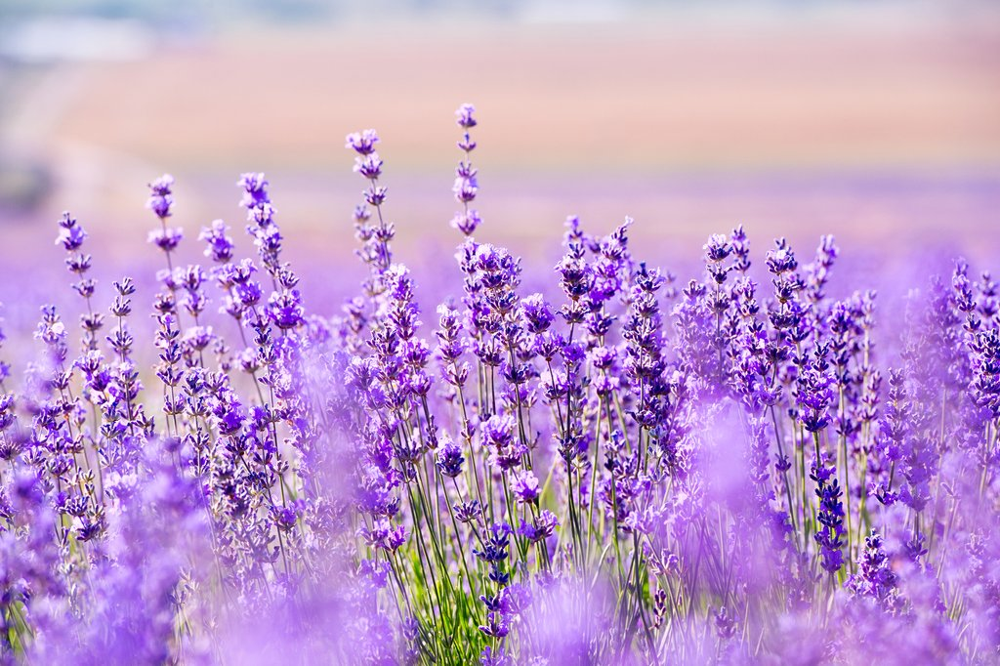

Bunga Matahari
06, Maret, 2007
Tentang Bunga Matahari
Bunga matahari (Helianthus annuus L.) adalah tumbuhan semusim dari suku kenikir-kenikiran (Asteraceae) yang populer, baik sebagai tanaman hias maupun tanaman penghasil minyak12. Bunga tumbuhan ini sangat khas: besar, biasanya berwarna kuning terang, dengan kepala bunga yang besar (diameter bisa mencapai 30 cm)1. Biji benihnya dapat dimakan sebagai makanan ringan atau ditekan menjadi minyak masak2.
Bunga Ros
21, Februari, 2007

Tentang Bunga Sakura
Bunga sakura adalah bunga kecil berwarna merah muda lembut yang dihasilkan oleh pohon sakura. Mekar musim semi adalah tontonan yang mewah tetapi sangat singkat. Hanya sekitar dua minggu, sakura akan jatuh ke tanah dan layu. Sebagai bunga asli Asia, sakura juga dapat ditemukan di Cina, Korea Selatan, dan India.
Bunga Edelweis
18, Juni, 2007
Tentang Bunga Edelweis
Edelweiss adalah bunga nasional Swiss dan sangat terkait dengan budaya Rumania, Austria, serta Italia. Bunga ini umumnya digambarkan dalam literatur dan seni sebagai muncul langsung dari batu gundul. Bunga edelweiss cenderung tumbuh di tanah berbatu dan berkapur di sekitar tepi padang rumput terbuka.
Bunga Tulip
18, Juni, 2007

Tentang Bunga Tulip
Tulip merupakan tumbuhan tahunan berumbi yang tingginya antara 10–70 cm, daunnya berlilin, berbentuk sempit memanjang berwarna hijau nuansa kebiru-biruan, dan bunganya berukuran besar terdiri 6 helai daun mahkota. Bunga ini pertama ditemukan di Turki.
Bunga Lavender
16, Desember, 2007
Tentang Bunga Lavender
Bunga lavender termasuk bunga berukuran kecil. Bunganya terdiri dari serangkaian kuntum, jumlahnya terdiri dari 6 hingga 10 kuntum berbentuk spiral. Bunga lavender tumbuh di percabangan batang. Warnanya biru keunguan, namun lebih dominan ungu. Bunga ini memiliki bulu-bulu halus berwarna putih.
About Me
Hallo! Perkenalkan nama saya Amila Miftahusyifa. Saya membuat website tentang macam-macam bunga. Saya berumur 17 tahun. Saya bersekolah di SMKS Inovasi Mandiri. Alamat saya di Cangkuang, Darmaraja, Sumedang, Jawabarat, Indonesia. Saya mempunyai hobi yaitu salah satunya mencari tahu tentang macam-macam bunga.
Bunga-Bunga Asal Indonesia!

Follow Me
Website Untuk Mengenal Berbagai Jenis Bunga!!
Social Media